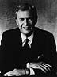

|
News
|

|
|
|
| WANI NewsTalk 1400 keeps listeners
up-to-date with national news at the top of the hour from
NBC radio, and Auburn/Opelika news on the half hour as well
as state news from the Alabama Digital Satellite Network and
a business update from CNBC once each hour. |
|
|
Chad Dorsett
News Director |
| |
WANI NewsTalk
1400 Delivers More Local Newscasts Daily Than Any Other
Auburn/Opelika Radio Station |
| News Director Chad Dorsett heads WANI's local news team that provides
complete coverage of news in the Auburn/Opelika area.
Local headlines follow top-of-the-hour national news
and a full local newscast is delivered on the half hour.
Listeners in Auburn/Opelika know to tune to WANI, the
area's only news/talk station, for the latest in local
news coverage. |
|
|
|
|
|
|

|
Barry Davis
WSFA-TV |
Kim Hendrix
WSFA-TV |
Tom Brokaw
NBC-TV |
|
| Additionally, WANI NewsTalk 1400 presents a
simulcast of WSFA-TV's award winning news team at 5:00 p.m. and
6:00 p.m. each weekday as well as NBC Nightly News With Tom Brokaw
at 5:30 p.m. |
|
|
|
WANI NewsTalk 1400 is Auburn/Opelika's home for ESPN Radio,
the worldwide leader in sports programming. Catch ESPN Radio each
weekend on WANI
|
|

© 2000 Auburn Network, Inc
|
Last updated Tuesday, 15-Feb-2000 11:18:15 CST
|